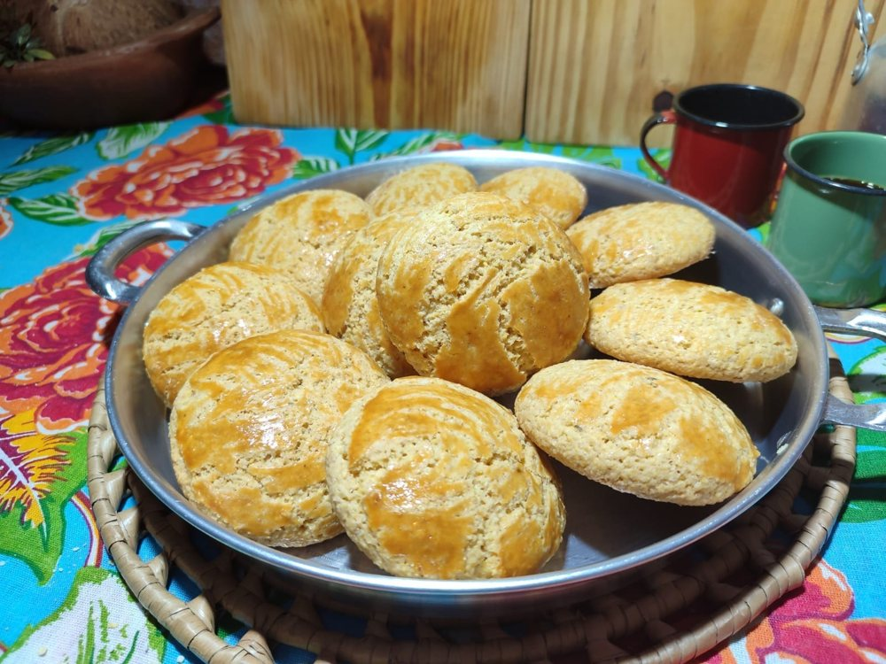

Doces · Tortas e bolos
Broinhas de fubá

Ingredientes
- 2 xícaras de açúcar
- 1 xícara de manteiga
- 5 gemas
- 1 garrafa pequena (200 ml) de leite de coco
- 1 xícara de leite
- 2 xícaras de fubá
- 1 xícara de farinha de trigo
- 1 colher (sopa) de fermento em pó
- 5 claras batidas em neve firme
Modo de preparo
- Forre 40 forminhas de empada, com 7 cm de diâmetro, com 2 forminhas de papel cada uma.
- Preaqueça o forno em temperatura média (180 °C).
- Na tigela da batedeira, coloque o açúcar e a manteiga e bata até obter um creme esbranquiçado.
- Junte as gemas, uma a uma, alternando com o leite de coco e o leite, sem parar de bater. Desligue a batedeira.
- Acrescente o fubá, a farinha de trigo e o fermento em pó. Misture bem com uma colher de pau.
- Junte as claras em neve aos poucos, misturando delicadamente para não perder volume.
- Distribua a massa preparada pelas forminhas forradas. Coloque-as numa assadeira e leve ao forno preaquecido até ficarem douradas (cerca de 35 minutos).
- Retire do forno e desenforme. Deixe esfriar e congele.
Observação
Na hora de congelar, não deixe de preencher os espaços vazios entre uma broinha e outra com toalhas de papel: esse método evita a formação de cristais de gelo entre as broinhas. Congelamento: coloque as broinhas num recipiente rígido, próximas umas das outras, e preencha os espaços vazios com toalhas de papel; intercale cada camada de broinhas também com toalhas de papel. Vede bem, etiquete e congele. Descongelamento: em temperatura ambiente por 1 hora e leve ao forno para aquecerem.